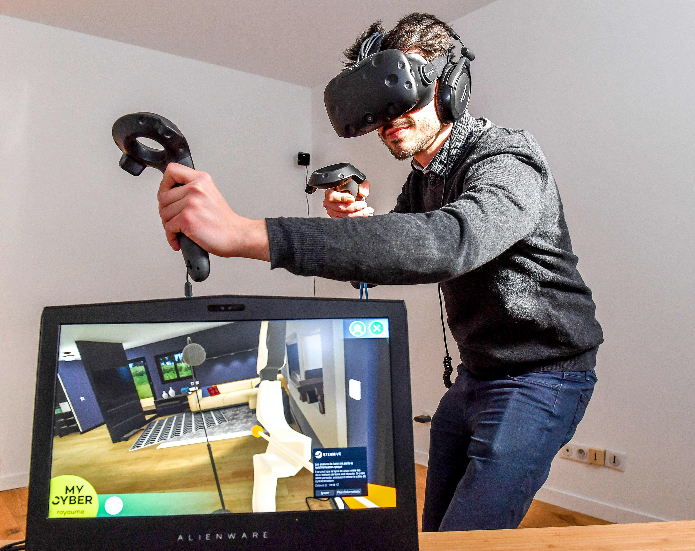

Information Technology Mini Hub
Emerging Technologies
Augmented Reality
Augmented reality (AR) is an interactive experience that combines the real world and computer-generated content. The content can span multiple sensory modalities, including visual, auditory, haptic, somatosensory and olfactory. AR can be defined as a system that incorporates three basic features: a combination of real and virtual worlds, real-time interaction, and accurate 3D registration of virtual and real objects. The overlaid sensory information can be constructive (i.e. additive to the natural environment), or destructive (i.e. masking of the natural environment). This experience is seamlessly interwoven with the physical world such that it is perceived as an immersive aspect of the real environment.

Artificial Intelligence
Artificial intelligence (AI) is the intelligence of machines or software, as opposed to the intelligence of humans or animals. It is also the field of study in computer science that develops and studies intelligent machines. "AI" may also refer to the machines themselves. AI technology is widely used throughout industry, government and science. Some high-profile applications are: advanced web search engines (e.g., Google Search), recommendation systems (used by YouTube, Amazon, and Netflix), understanding human speech (such as Siri and Alexa), self-driving cars (e.g., Waymo), generative or creative tools (ChatGPT and AI art), and competing at the highest level in strategic games (such as chess and Go)
Virtual Reality
Virtual reality is a simulated 3D environment that enables users to explore and interact with a virtual surrounding in a way that approximates reality, as it is perceived through the users' senses. The environment is created with computer hardware and software, although users might also need to wear devices such as helmets or goggles to interact with the environment. The more deeply users can immerse themselves in a VR environment -- and block out their physical surroundings -- the more they are able to suspend their belief and accept it as real, even if it is fantastical in nature.